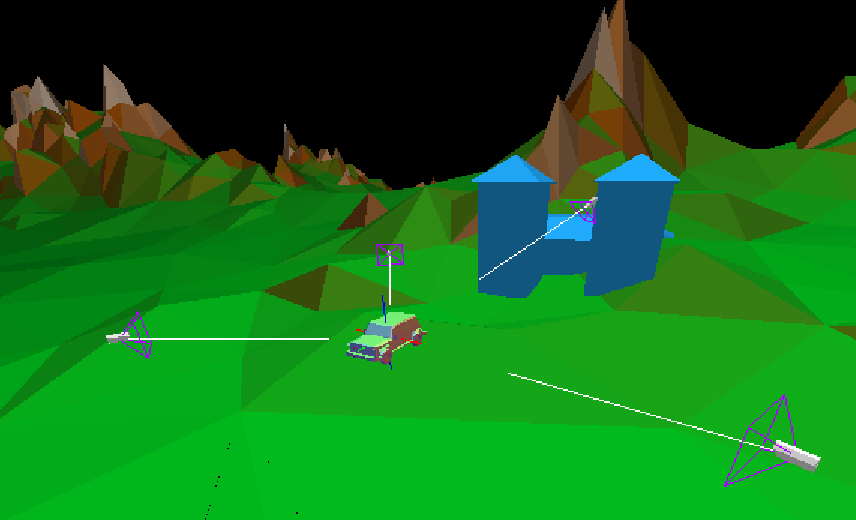
3d virtual position-triangulation thru multiple camera's frame-wise differences
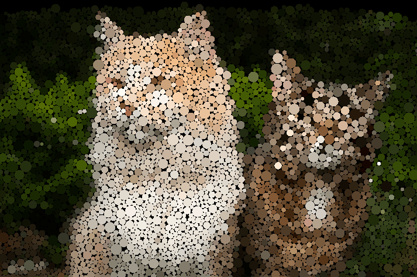
particle system with collisions using an optimized spatial hash grid
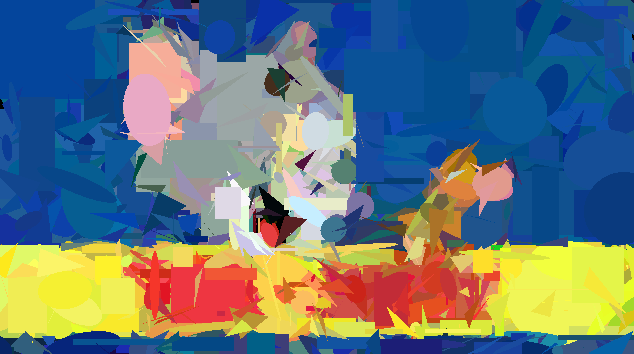
image abstracted with shapes using a hill-climbing algorithm
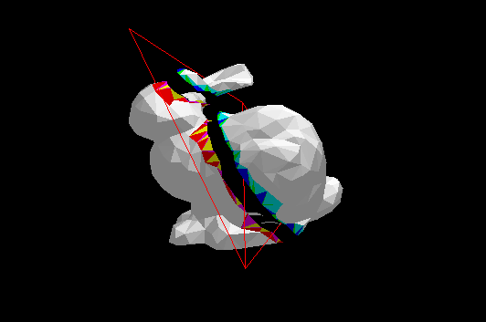
3d model mesh split by plane and retriangulated
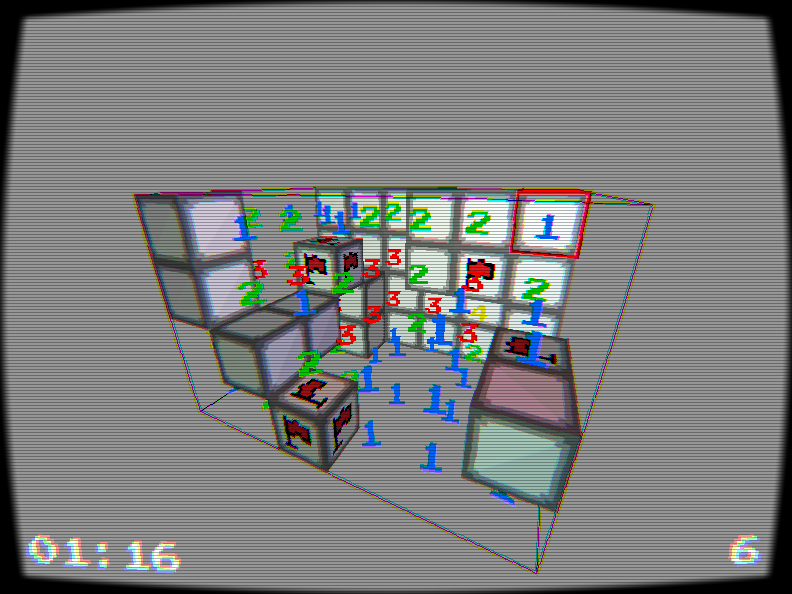
the classic minesweeper game in 3d with intuitive orbit controls & cosmentic particle systems
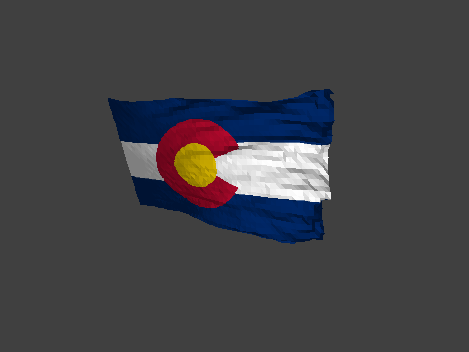
3d flag-like mass-spring cloth simulation
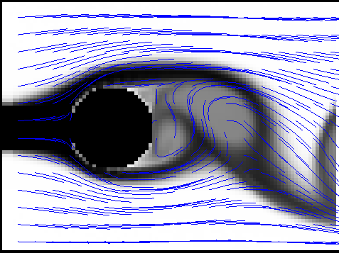
implementation of jos stam's real-time fluid dynamics for games
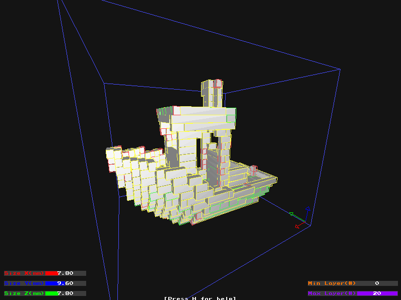
voxelized mesh sliced into greedymeshed prisms
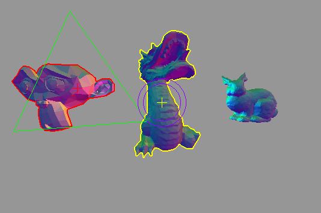
3d interactive scene with quaternion rotation, plane translation, and relative scaling
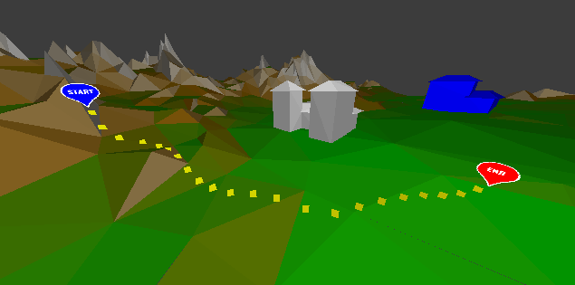
3d open world with a* navigation system
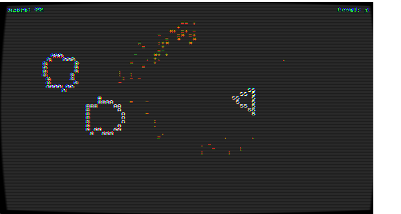
the classic asteroids game with a pseudo-shader to imitate text-based console graphics
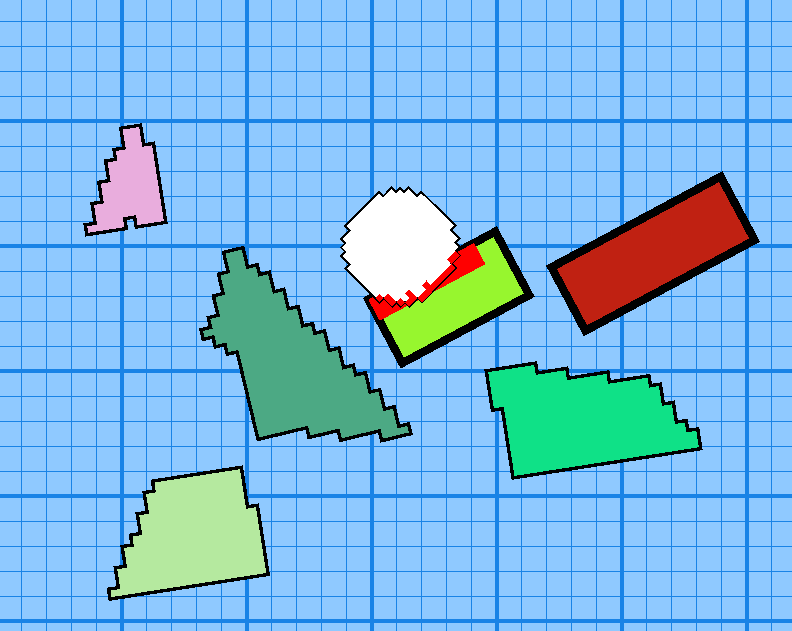
orientable bitmaps with physics and collision detection
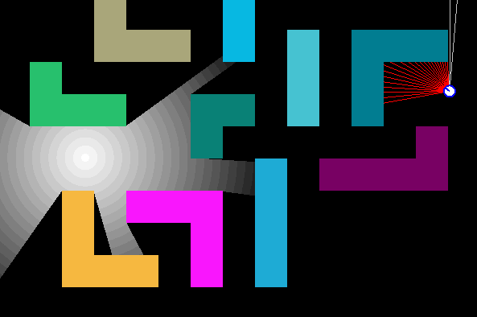
casting shadows in all directions using dda(digital differential analyzer) tilemap ray intersections
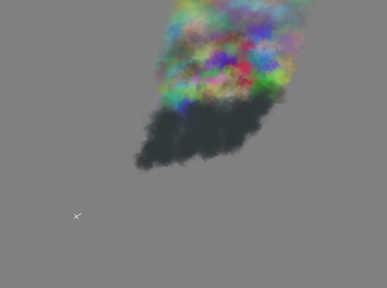
attempt to procedurally imitate smoke-like effects with a particle system
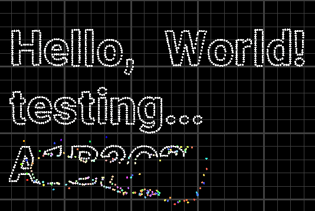
implementation of craig reynolds' boids with a mouse fleeing rule
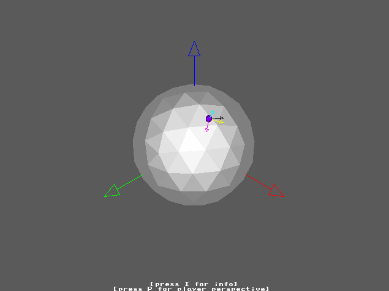
3d spherical-coordinate based walking control system for an upcoming game
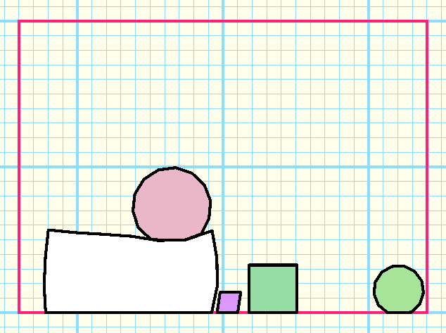
implementation of walaber entertainment's softbody physics system for the game jelly car
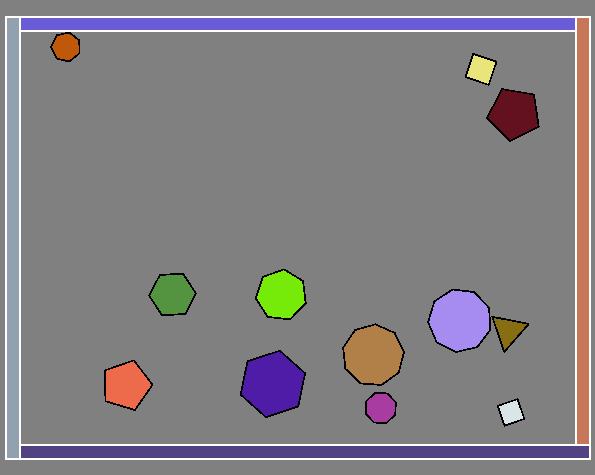
attempt to imitate rigid body physics using sat(seperating axis theorem)